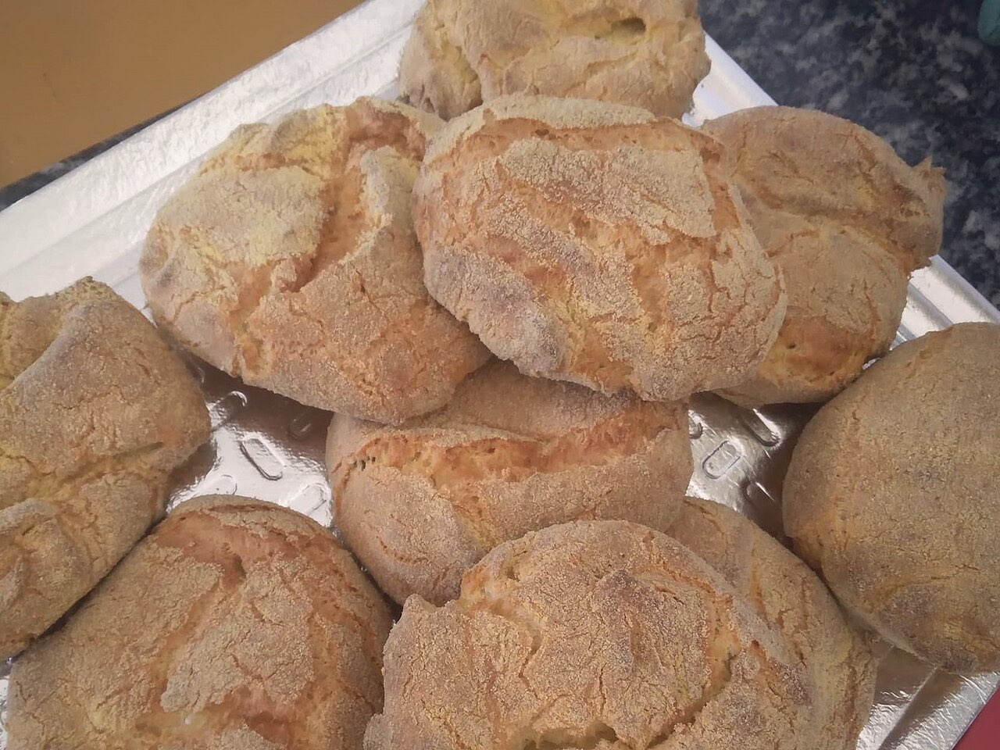

Fotografias ilustrativas — no site final usamos as vossas.
Padaria · Caldas das Taipas
Padaria de bairro, nas Taipas
Uma paragem para levar o pão de cada dia.
Nas Taipas, fácil de encaixar no seu caminho.
Ligue ou escreva por WhatsApp antes de passar.
A Padaria do Arquinho fica na Rua do Arquinho, em Caldas das Taipas, terra de termas. Passe para levar o pão e o que mais lhe apetecer para o dia.

Fotografias ilustrativas — no site final usamos as vossas.
Encomenda
Diga o que precisa e quando quer levantar (ou receber). Respondemos por WhatsApp.
↑ Assim chegaria a mensagem ao vosso WhatsApp. (Nesta demonstração nada é enviado.)
Onde estamos
Proposta para Padaria do Arquinho
Esta página foi feita de propósito para Padaria do Arquinho por João Machado, programador web aqui de Guimarães. Inclui:
Eu trato do alojamento e da manutenção. Sem compromisso.